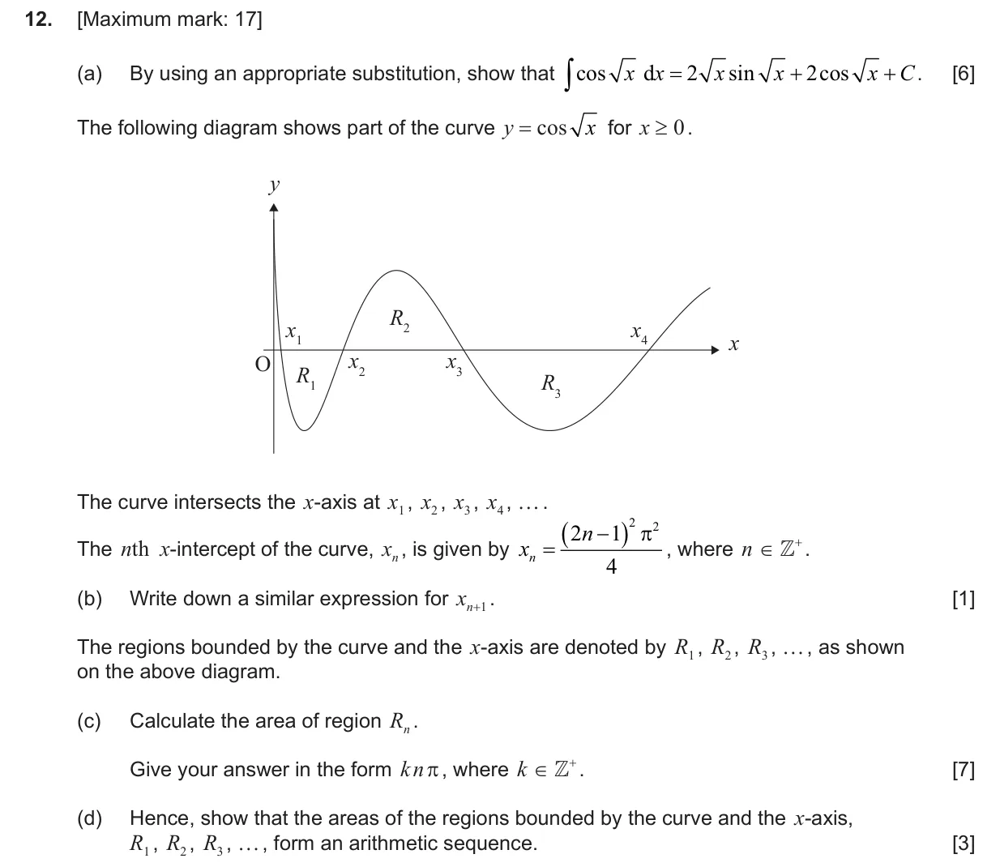
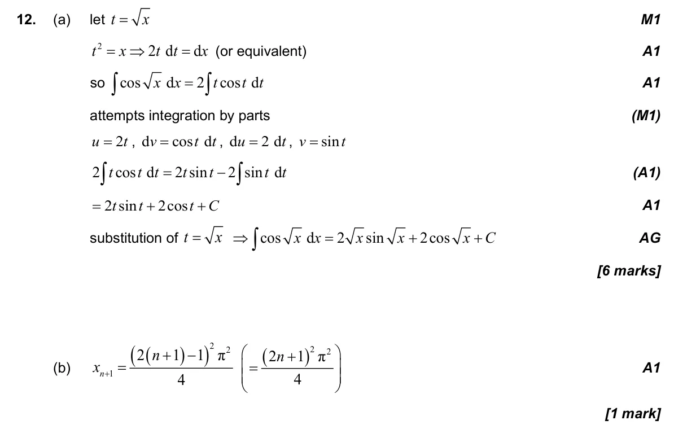
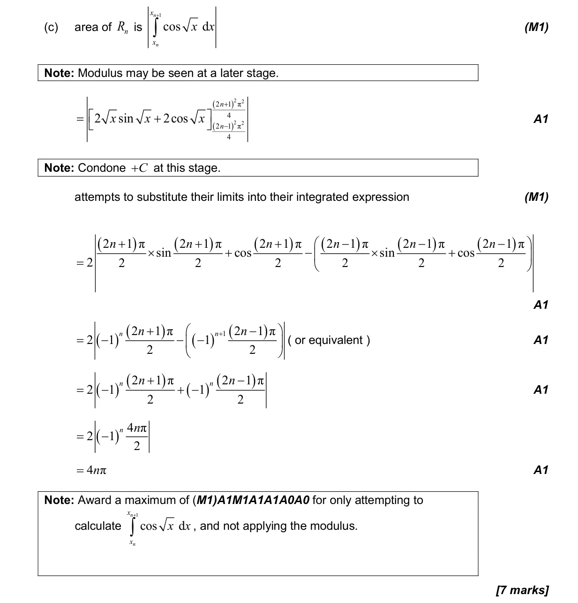
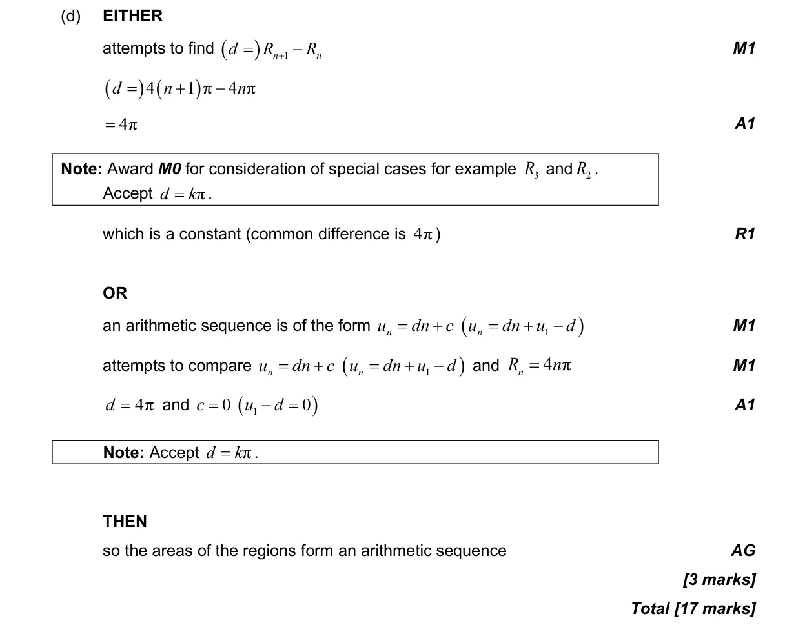

17 marks P1 TZ2 Section B No calculator 5.16 Integration by substitution and by parts5.11 Definite integrals, areas under curve onto x-axis and areas between curves3.5 Unit circle definitions, exact trig ratios and ambiguous case of sine rule1.2 Arithmetic sequences and series2.2 Functions, notation, domain, range and inverse as reflection Question Hide breakdown abcd Markscheme 